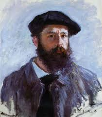 클로드 모네 작품의 특징은 빛과 색채의 순간적 인상을 포착하기 위해 '연작(Series)' 기법을 사용하고, 거칠고 짧은 붓 터치로 형태를 흐릿하게 표현하며, 광학적 혼합을 통해 생생한 시각적 효과를 만들어낸다는 점입니다. 특히 같은 대상을 시간, 날씨, 계절에 따라 다르게 그리며 빛의 변화와 자연의 움직임을 탐구한 것이 핵심이며, 수련 연작, 건초더미 연작, 루앙 성당 연작 등이 대표적입니다.
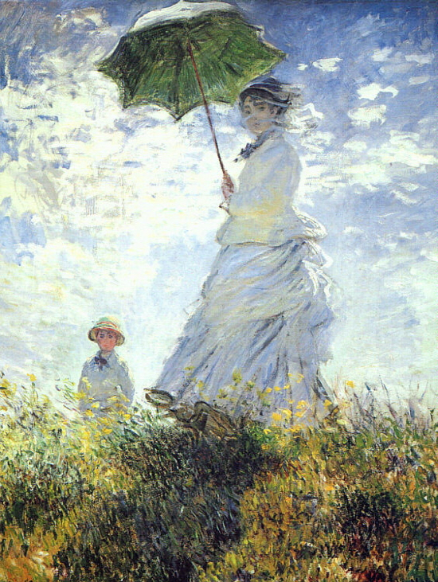
〈양산을 든 여인 - 카미유와 장〉
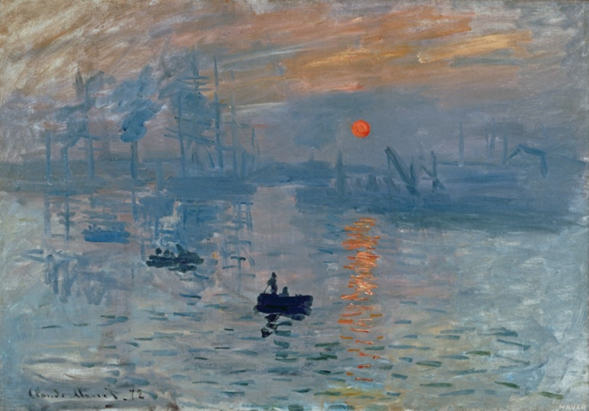
〈인상, 해돋이〉
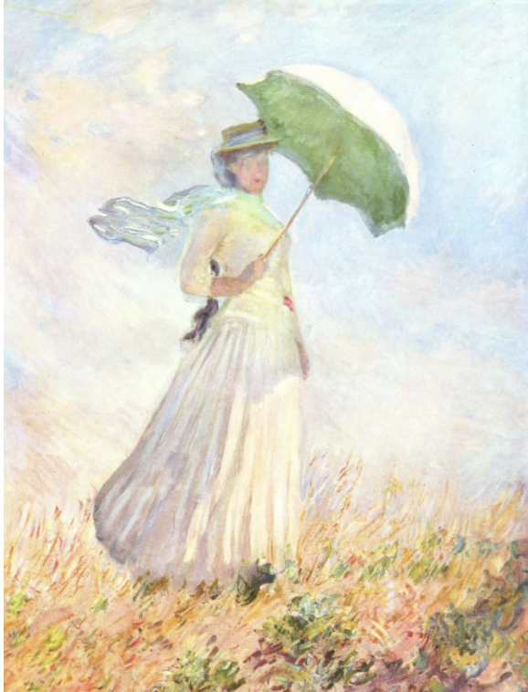
〈양산을 든 여인〉
〈퓌이라베의 절벽 위 산책〉
〈아르장퇴유의 센 강〉
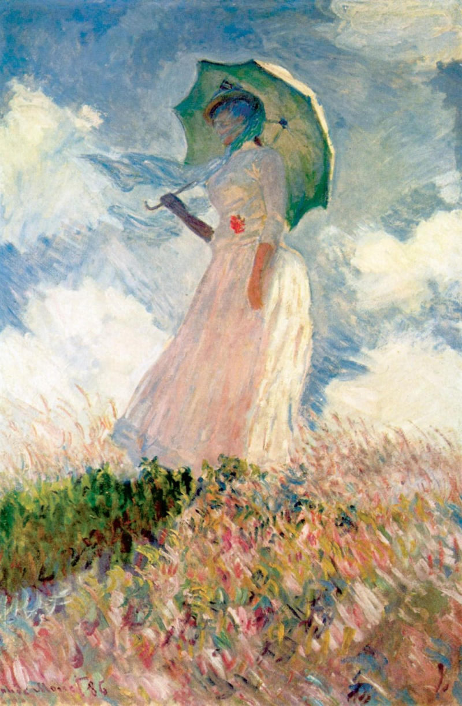
〈양산을 든 여인 (바람 속의 여인)〉
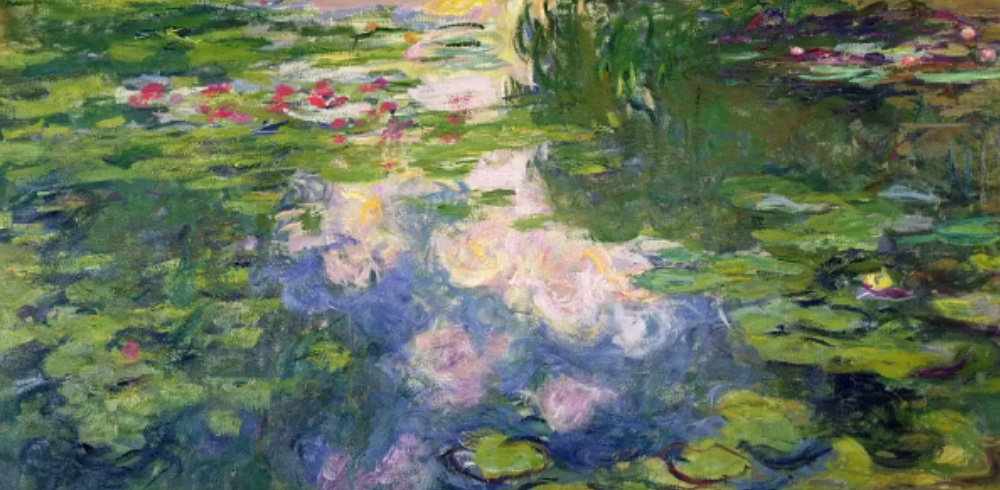
〈수련〉
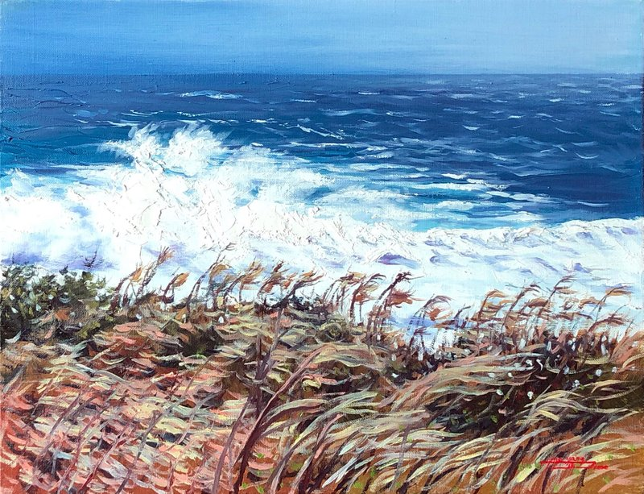
〈수련 연못 – 빛의 반사〉
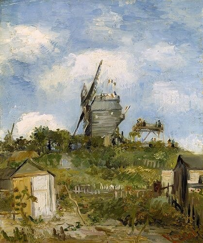
〈풍차가 있는 풍경〉
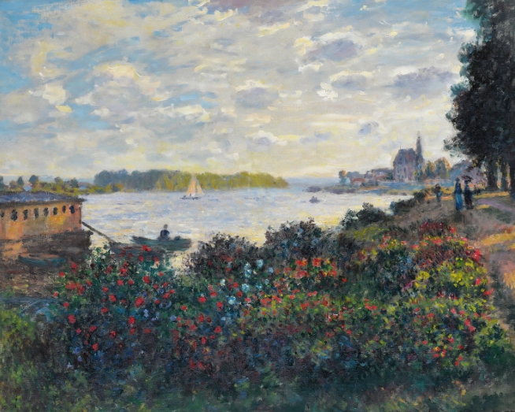
〈아르장퇴유의 센 강과 꽃밭〉
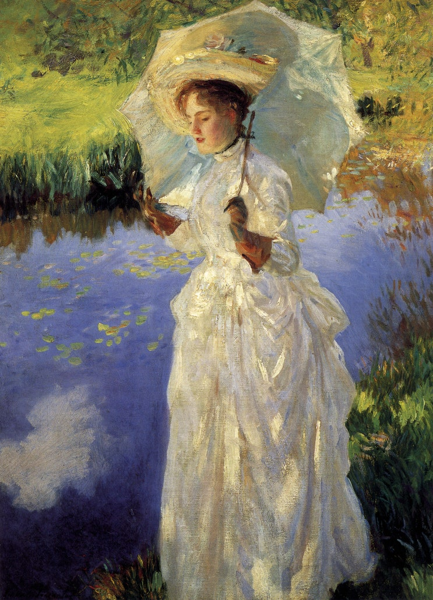
〈양산을 든 여인 (읽고 있는 여인)〉
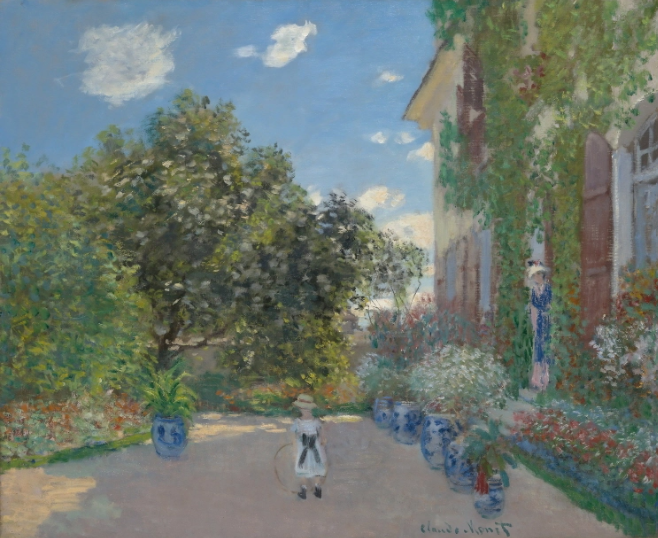
〈지베르니의 정원〉
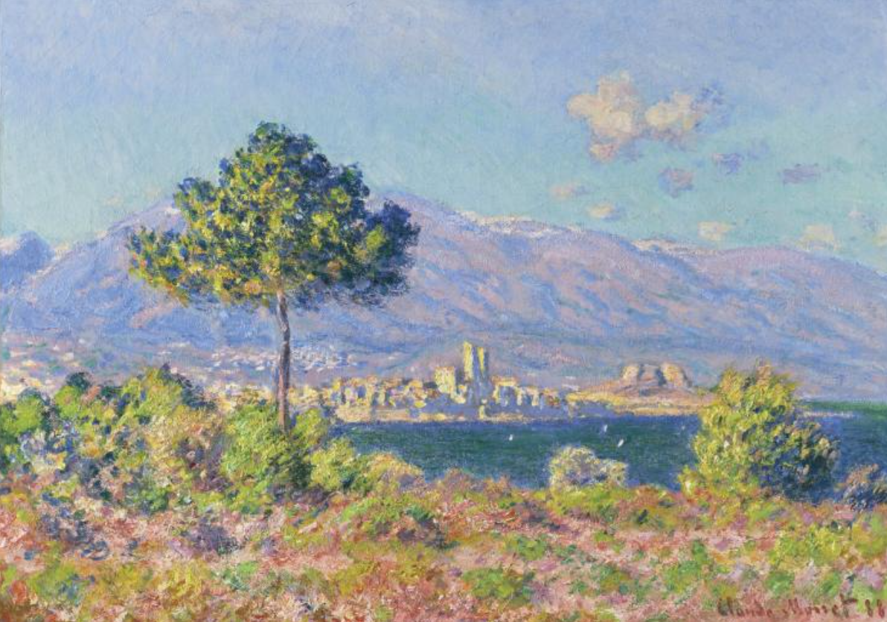
〈남프랑스의 산과 바다〉
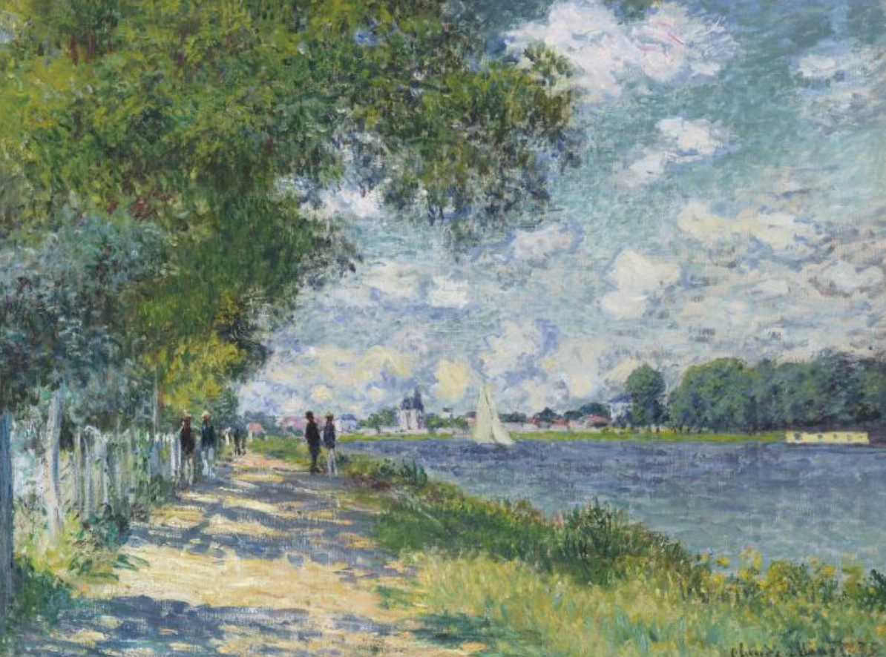
〈강가 산책로와 강 위의 돛단배〉